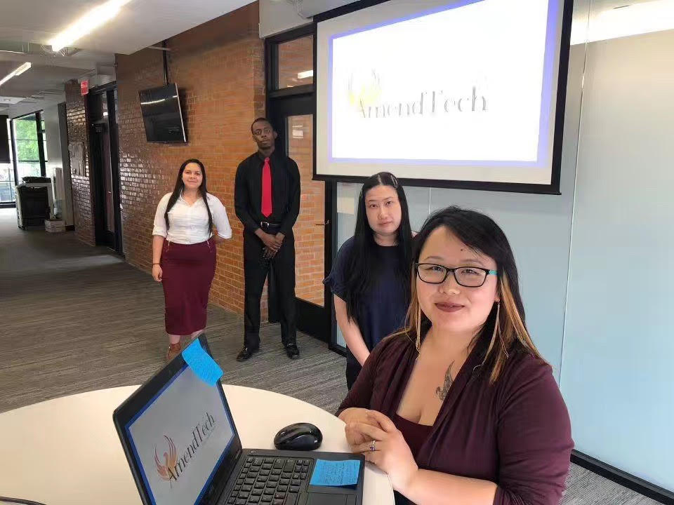

Portfolio

Hi I am Xinya! I created this portfolio because not only do I love to design but I need a space to store my collection of code! In the beginning I could only create a html page with just one image and now I am making a porfolio of all the things I have learned.
I have a diverse of skills, ranging from Html, css, c++, c, razor pages, .NET, microsoft azure, javascript, wire frame, adobe XD, photoshop, editing, MySql, and more. In addition my other skills include creating content from visual studio code and visual studio and also adding on some back end skills through using MySql and deploying websites with Microsoft azure. As for other skills I have experience using Figma in creating wireframes when developing a plan for websites. Plus I have also use wordpress to journal my ideas and this is also another creative outlet I am using. I aspire to become a full stack developer so I am always passionate to learn about the IT world.
So who am I? throughout my interning career I have discovered what type of person I am. For example the type of persona I have is a hacker/hipster combo which includes the skill set of coding, developing, and the artsy creative type always enjoying to create something. In my interning days at The commons they have introduced us to four types of personas which are Hacker, hipster, handler, and the hustler. Furthermore they have also introduced us to the various combos people can be which is also interesting because this is very important when it comes to teamwork. One example being you can't have a team of all hipsters but you need a little bit of everything to get things done.
Purpose of the website
To create a portfolio website where it showcases some of the things I have created and the portfolio itself is also where I can show what type of langauges I have been learning and how I design everything. Currently I will be updating my website as much as I can but as for projects I have done I will be attaching them onto my github.
How will the website look
I am including more bright colors for my current theme but I might be changing the theme later on so this isn't a pernament look for the site.
Team introduction
As I continue to intern I have discovered there are many different type of teammates. The most important part is of course bonding with your team to create amazing synergy!
